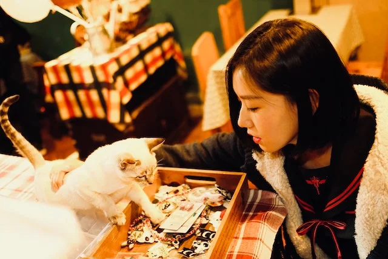
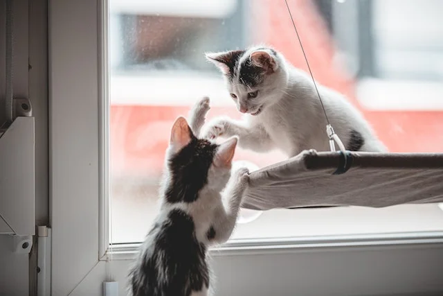
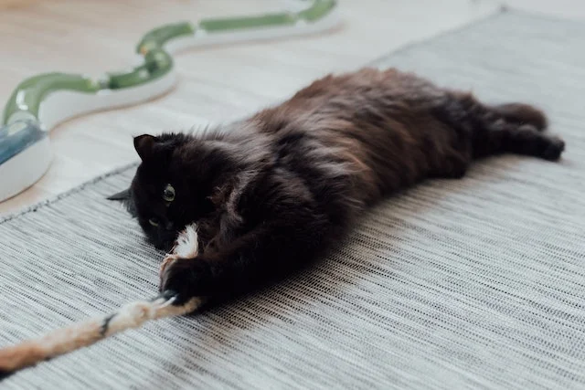
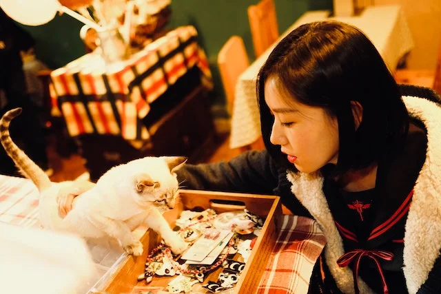
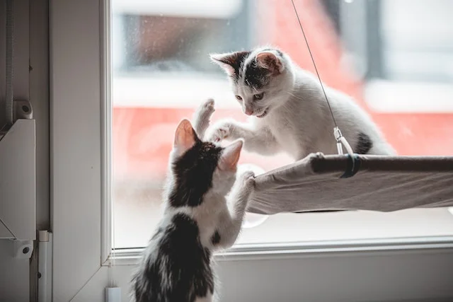
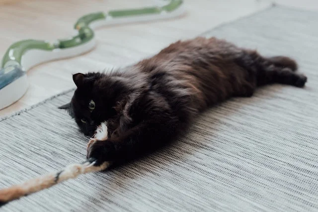

Welcome to Whiskers N Whole Beans!

What you will experience walking through our doors...
Welcoming to all
Calm and relaxing atmosphere
A safe place for the cats and the humans to
The Cats

We strive to create a calm atmosphere for the cats in our care. We have two resident cats where they call Whiskers N Whole Beans their permanent home. We foster between 10-12 foster cats from the DSPCA.
Who We Are

Whiskers N Whole Beans was imagine by Amanda, the owner, who she herself adopted two cats who were housed in a foster home. The two cats, Mo and Eva, would be there through finsihing three degrees and various life changes. Amanda, who is a Librarian/Archivist, with a love for coffee and cats decided to open a cat cafe, where foster cats can interact with humans (as we are called by our cats) and have a coffee or a snack.
 




